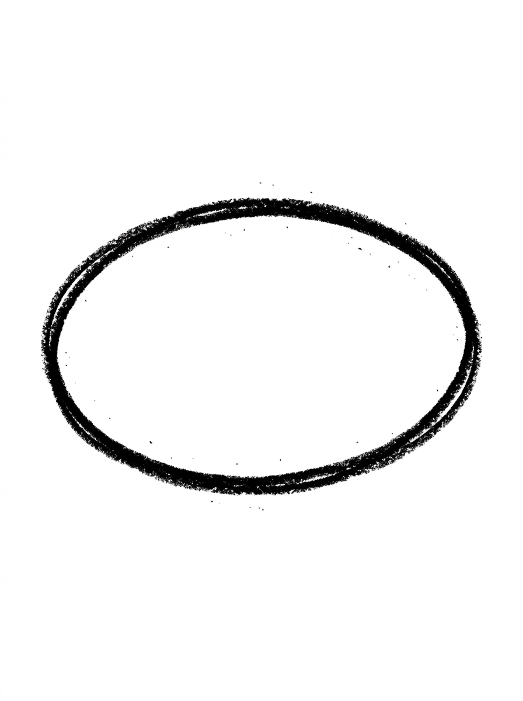
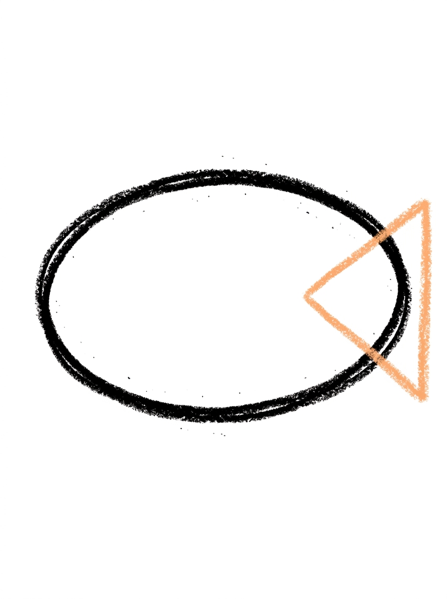
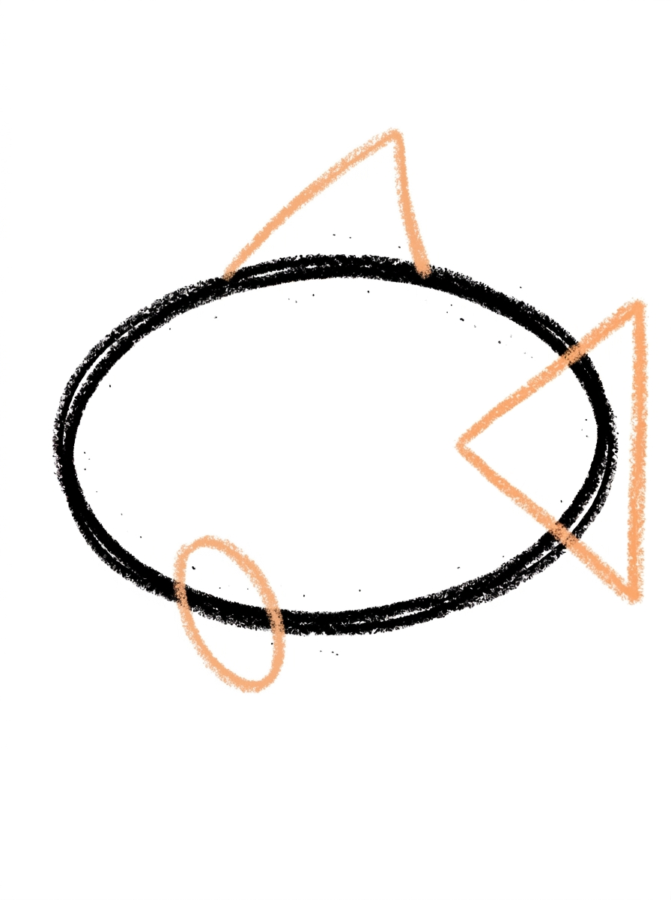
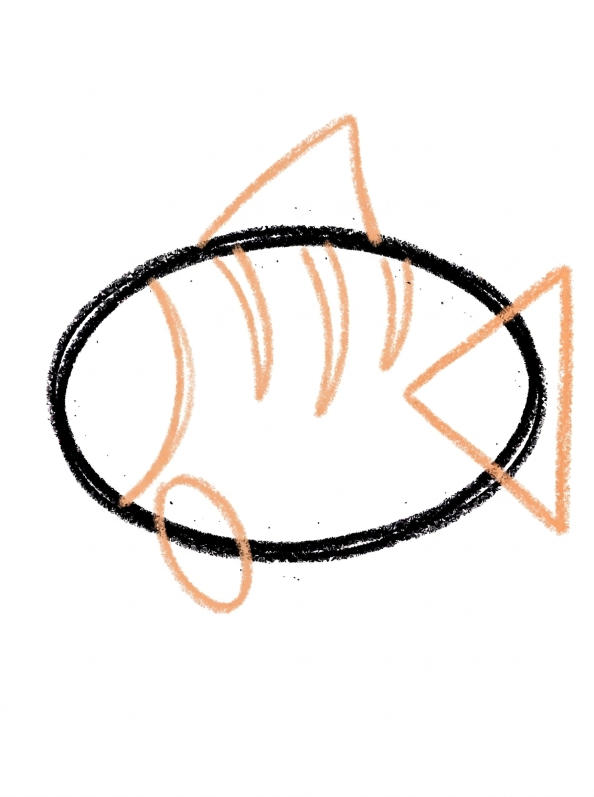
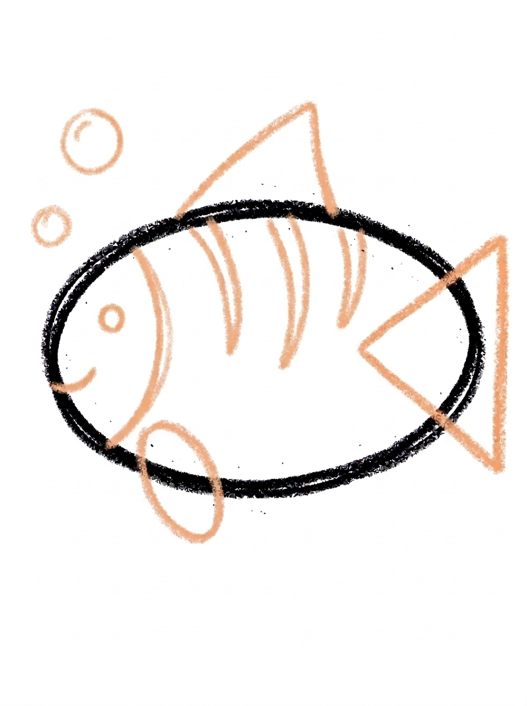

Fish Drawing for Kids How to Draw A Fish in 6 Easy Steps
Quick Answer
Draw a fish in six easy steps: an oval body, a triangle tail at the back, a triangle fin on top with an oval fin below, a curved gill line with three stripes, then a dot eye, a smile, and two bubbles. Color it bright orange. Made for ages 3 and up — no signup needed, just print and draw.
At a Glance
- Subject: How to draw a fish
- Ages: 3+
- Steps: 6 steps
- Time: ~15 min
- Difficulty: Easy
- Supplies: Paper, crayons
A fish is the drawing almost every child attempts first — and this version shows them how to actually pull it off. It's an oval, a triangle tail, and a few friendly details, finished with two little bubbles that kids always love adding.
✏️ Draw Your Fish in 6 Easy Steps
One step per box — this step by step fish drawing shows each new part in a different color so kids can see exactly what changed.
Step 1: The Body

Draw one big oval lying on its side in the middle of your paper. This round shape becomes your fish's body.
Step 2: The Tail

Draw one big triangle at the back end of the body, with its point touching the body and its wide edge at the back. This is your fish's tail.
Step 3: The Fins

Draw one triangle fin standing on top of the body, touching the body's top edge. Then draw one small oval fin hanging under the body near the front.
Step 4: The Gill and Stripes

Draw one curved line inside the body near the front, running from the top down to the bottom — that's the gill line. Then draw three short curved stripes behind it on the body.
Step 5: The Face and Bubbles

Draw one round dot eye near the front of the body and one small curved smile at the front tip. Then add two round bubbles floating above the front of the fish.
Step 6: Color It In

Color your fish! Bright orange for the body, golden yellow for the tail and fins, darker orange for the stripes, black for the eye, and pale blue for the bubbles. Great drawing!
📊 Fish Drawing by Age
Every age can join in — just adjust the job.
| Age | What they can do | Tip |
|---|---|---|
| 3-4 | Draw the big oval body and the triangle tail, and color the fish bright orange. | This is one of the easiest first tutorials: the body and tail are big shapes with lots of room for wobbly lines. |
| 4-5 | Add the triangle fin on top, the small oval fin underneath, and the three curved body stripes. | Show them that the little oval fin hangs under the front of the body — placement is the only tricky bit in steps 1–4. |
| 6+ | Complete all six steps, including the gill line running from top to bottom and the two floating bubbles. | Let older kids draw a whole school of fish in different sizes and colors — repetition with variation is where fluency grows. |
🖨️ Download Your Free Fish Drawing Printable
The printable lays out all 6 steps one per box, big enough for little hands — kids draw right alongside each step.
⬇️ Open Free Printable 🖨️ Print🎁 Free printable for ages 3+
🐟 Build an Aquarium
Fill an aquarium: draw your fish three more times in different sizes on one page, color each one a different color, and add wavy seaweed lines and a few pebble dots along the bottom. Kids can give each fish a name and a job (the red one is the teacher, the tiny one is the baby). A finished 'aquarium' page makes a great fridge display because the same simple steps produced a whole scene.
What You'll Need to Draw A Fish
You need a pencil, an eraser, and crayons or markers. For the tutorial's colors, have bright orange for the body, golden yellow for the tail and fins, darker orange for the stripes, black for the eye, and pale blue for the bubbles. Plain white paper makes the orange pop; light blue paper works too if you draw with a dark pencil.
What They're Learning
This tutorial practices the two most useful shapes in kids' drawing — the oval (body) and the triangle (tail and top fin) — plus a small oval fin underneath. Kids learn inside-body lines with the curved gill line and three stripes, spatial words (front, back, top, under, above) as each part is placed, and finishing details: a dot eye, a curved smile, and counting two bubbles.
Make It Yours
Color the fish in rainbow stripes instead of orange, make a clownfish by widening the stripes and outlining them, draw a shark version by swapping the tail for a crescent and adding a bigger top fin, or fill the page with a school of fish in different sizes all facing the same way. A goldfish bowl around one small fish — one big circle — is another easy win.
🛒 Our Favorite Drawing Supplies
These are the supplies we reach for in our own home — washable (because kids), quality paper, and enough colors to avoid fights.
As an Amazon Associate, MomYouNeedThis earns from qualifying purchases — at no extra cost to you.
💡 Fish Drawing Tips for Parents
Watch the small oval fin in step 3: it hangs under the body near the front, not in the middle. Kids tend to place it wherever there's space, and a fin floating mid-belly looks odd even to them. A quick reminder — 'the little fin goes under the fish's chin' — fixes placement before the pencil touches down.
The gill line in step 4 should curve gently and run the full height of the body, from the top edge to the bottom edge. If it stops halfway, the fish looks patched rather than gilled. If your child is nervous about drawing inside a shape they've already made, let them practice the curve in the margin first — one rehearsal line is usually enough.
✏️ Fish Drawing Step by Step
This fish drawing is two shapes deep before it is anything else: one big sideways oval, then one big triangle at its back end, and the animal is already recognisable. Everything after that — fins, gill line, stripes, face, bubbles — is detail laid over a skeleton that already works.
The one orientation that matters is the tail's. Its point must touch the body and its wide edge must face backward, away from the fish. Reversed — wide edge against the body, point sticking out behind — is the classic first-try error, and it makes the tail look tied on. Catching it at step two costs one erased triangle; catching it after the stripes means redoing the back half.
Draw the oval generously, too. The gill line, all three stripes, the eye and the smile live inside it, and a small body crowds them into each other. A big oval with the face in its front part leaves the stripes room to spread across the back, where they belong.
See free fish printable for more.
✏️ One Shape Per Step, Six Steps Total
Check the fish drawing at four moments. First, right after the tail goes on: point touching the body, wide edge at the back — the silhouette should already read as a fish with nothing else drawn. If it does not, the tail is the only thing that can be wrong.
After step four, police the zones the gill line creates. Everything in front of the gill line is face; behind it there should be exactly three stripes, spread between the gill and the tail. A stripe that lands in front of the line has wandered into the face's territory, and it is worth moving before the colour goes on.
After step five, check the bubbles: exactly two, both floating above the front of the fish, near the smile that made them — bubbles over the tail tell the wrong story. Then the colour check for step six: tail and both fins the same golden yellow, body bright orange, stripes a darker orange. Three related shades, no strays.
See free fish printable for more.
🐟 Cute Fish Drawing
What makes this a cute fish drawing rather than a plain diagram is the face: one round dot eye and one small curved smile, close together at the front tip. That pairing gives the fish an expression, and kids immediately start treating it as a character — naming it, talking for it, drawing it a friend.
The two bubbles are its speech. If your child wants more, a trail of circles shrinking as they rise diagonally from the mouth makes the fish look like it is on its way somewhere, and it fills the empty top corner of the page at the same time.
For a kawaii-style version, change only the finishes: drop the eye a little lower, add one tiny cheek circle under it, and swap the orange body for pastel rainbow stripes. The six steps underneath do not change at all — style lives in the last step, not the first.
See free fish printable for more.
❓ Fish Drawing FAQs
What is the easiest way to draw a fish?
Start with one big sideways oval for the body, then add a triangle tail at the back. Put a triangle fin on top and a small oval fin underneath, draw a curved gill line with three stripes, and finish with a dot eye, a smile, and two bubbles.
What age is this fish drawing for?
It's made for ages 3 and up, and it's one of the best very-first animal tutorials: the body and tail are simple, and even the youngest artists can do the coloring and bubbles.
What supplies do we need?
A pencil, an eraser, paper, and crayons or markers. For the tutorial's colors you'll want bright orange for the body, golden yellow for the tail and fins, darker orange for the stripes, black for the eye, and pale blue for the bubbles.
Is the printable really free?
Yes — every printable on MomYouNeedThis is 100% free, including this fish drawing tutorial. There is no signup, no email, and no catch — just download, print, and draw.
How do I print it?
Open the PDF and choose Print, then set the scale to 100% (sometimes called Actual Size) so the steps print at full size. The tutorial is designed for regular US Letter paper, and plain printer paper works perfectly.
What is the curved line behind the fish's face?
The gill line is the curved line inside the body near the front, running from the top down to the bottom. On a real fish, the gill cover sits just behind the head — drawing it separates the fish's 'face' from its body, which is why the fish suddenly looks real when it goes in.
Can we draw the fish facing the other way?
In this tutorial the fish faces left, with its tail at the right. To flip it, mirror everything: tail triangle on the left, fins and gill line and face toward the right. All the shapes and the step order stay exactly the same.
What are the circles above the fish?
They're air bubbles rising from the fish — two round bubbles floating above the front of the fish. They're the very last detail in step 5, and kids often add a third smaller bubble on their own, which looks great.
📚 Keep Exploring
- ✏️ All 53 Drawing Tutorials 53 free step-by-step drawing tutorials for kids.
- 🐾 Animal Coloring Free printable animal coloring pages for little learners.
- ✏️ Drawing Practice Free printable drawing pre-writing worksheet for toddlers.